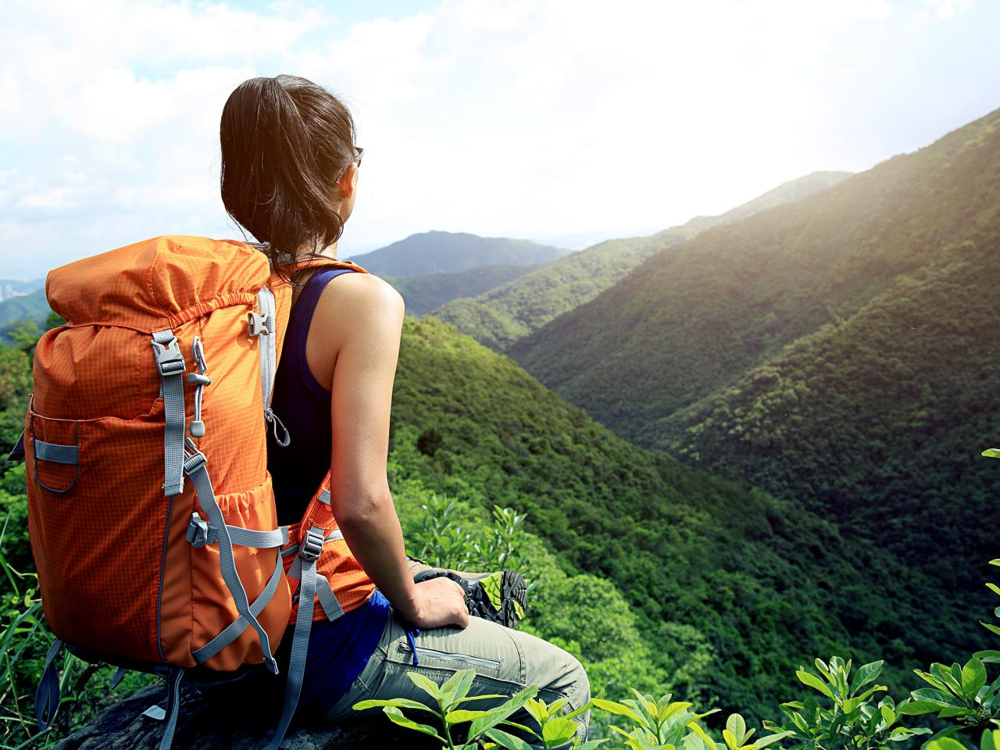
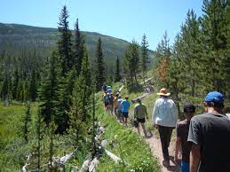
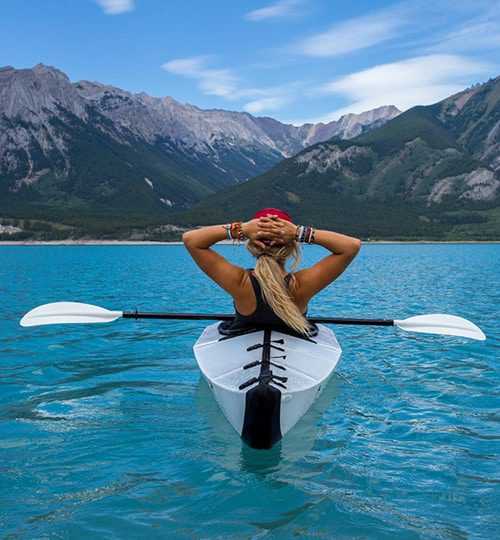

SERVICE
It's Time to Start Your Adventures
Life is about the
adventures you take and
the memories you make.
So travel often and live life
with open eyes and an
open heart.
Backpacking Trips
Backpacking in India is one of the adventurous experiences to live.
This gives a chance to the wanderer to enjoy a good time exploring the
mountains and the beaches along with unravelling the mysteries of the places.
To know from where to start, here is a list of best backpacking destinations in India.

Family Hiking Trips
We always thrive to make our parents proud. Even the greatest achievement does not make
us happy if it is not appreciated by our family. Here’s a chance to live your adventure
with your family. Stand on the summit with your family literally feeling on top of the world.
Because the family always comes first!

Water Sports
You don’t have to burn a hole in your pocket and travel abroad because India has got the best
kind of water sports ranging from kayaking, scuba diving, snorkelling, sky boarding, parasailing,
windsurfing, river rafting, and so much more.

Winter Sports
Many of you might be dreaming of taking a winter vacation abroad but can’t fly to your dream
destination due to pandemic-induced travel bans. That doesn’t mean winter travel and adventure
sports are off-limits this season entirely.

Why Outdoor Adventure
Our hectic modern lives require us to sit for hours in front of screens as we work, solve our
practical day to day issues and build social interactions and networks. Our body is forgotten
as our minds take over, and physical space gives way to virtual space. But our minds are in fact
dependent on our bodies, just as virtuality exists in a physical dimension full of natural light,
breezes and singing birds. Reconnecting with the earth, and giving our bodies what they need, is essential
to finding a sustainable balance in the modern day world.